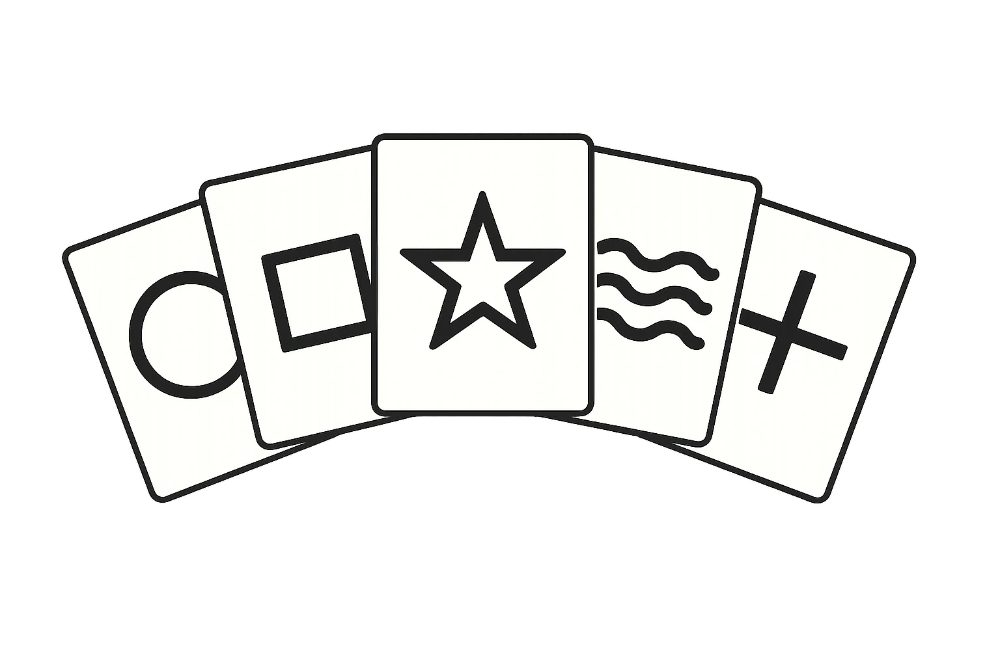

Gestor de Liga de Voleibol
Aplicación completa para gestionar equipos, jugadores y estadísticas. CRUD con PHP y MySQL, subida de imágenes y panel de administración.
HTML5CSS3JavaScriptPHPMySQLGit
Aplicaciones y sitios web desarrollados durante mi aprendizaje. Aquí encontrarás demos, repositorios y notas técnicas.
Selecciono proyectos con enfoque técnico, accesibilidad y despliegue real.
Aplicación completa para gestionar equipos, jugadores y estadísticas. CRUD con PHP y MySQL, subida de imágenes y panel de administración.

Simulación de tiradas aleatorias y cálculo de aciertos. Proyecto pensado para practicar lógica y manipulación del DOM.
Plataforma para concursos con lógica de emparejamiento, validación en tiempo real y panel de administración. Implementa AJAX y MySQL.